Three journeys. One walker. Two clocks.
One hobbit nerd's real journey through fictional time.
Between March 2024 and June 2026, through The Conqueror I completed three virtual walking challenges based on Tolkien's journeys: Frodo's slog to Mordor, Aragorn's return to the throne of Gondor, and Bilbo's journey to the Lonely Mountain. Google Fit tracked my mileage. This project maps those miles onto Middle-earth and lets you experience the journeys through two different timelines: when I actually walked, and when the characters did.
The Walk to Mordor is an interactive data-storytelling project built from 806 days of my real-world walking. I mapped that walking history onto three fictional journeys through Middle-earth and built two ways to experience it.
My Time follows my actual walking calendar: when I walked more, the character moves farther. Middle-earth Time follows Tolkien's chronology instead, reconstructing where the characters would have been on each day of their journeys.
The same map, routes, and story events serve both views. What changes is the clock.
I'd been completing the Conqueror challenges partly because the framing appealed to me: your daily steps, accumulated, become something. Frodo reaches Weathertop. You get a shiny medal. It's a small thing, but there's something satisfying about tying ordinary movement to narrative.
The Lord of the Rings also appeals to me as a metaphor for doing difficult things without knowing how they'll turn out. You don't have to know you'll succeed to take the next step. Sometimes you just have to keep going and leave room for luck, circumstance, and happy accidents to take you somewhere you couldn't have planned.
I already walked a lot. The challenges just gave me an extra reason to walk, and I genuinely enjoyed seeing where I was along the route. Eventually, I had two years of walking data. Naturally, I wanted to see what was actually in it. How much did I walk? When did my pace change? How did the three journeys compare? And what would happen if I put all of that alongside Tolkien's story?
I'm a data nerd. Of course I was gonna build something.
The three challenges were completed in the following order, with gaps between them. Each journey maps to one of Tolkien's narrative arcs, with its own start date, target mileage, and Shire Calendar chronology.
| Character | Journey | Walking Period | Target | Avg. Daily Miles | Days Active |
|---|---|---|---|---|---|
| Frodo | The Walk to Mordor | Mar 2024 – Jan 2025 | 1,815 mi | 7.1 mi/day | 261 |
| Aragorn | Return of the King | Jan 2025 – Aug 2025 | 1,482 mi | 6.5 mi/day | 225 |
| Bilbo | The Hobbit | Jan 2026 – Jun 2026 | 1,100 mi | 7.9 mi/day | 142 |
Across the full project window, including gap periods between challenges: 5,196 miles walked over 806 days. And just the challenge days? Roughly 4,465 miles walked over 628 days.
Frodo and Aragorn's fictional journeys overlap: Aragorn's route begins at Parth Galen on the same day Frodo breaks from the Fellowship (T.A. 3019, February 26). In Middle-earth Time, both characters are active simultaneously through the final weeks of the War of the Ring, right up to the destruction of the Ring on March 25, 3019. Bilbo's journey takes place in T.A. 2941, almost 80 years earlier, and runs independently.
The central design question was simple: What happens when the same journey is measured by two different clocks?
My Time asks when I actually walked those miles.
Middle-earth Time asks where the characters were in Tolkien's story on each day of their journey.
Both clocks use the same map and routes. They simply answer different questions. And the map and routes do not know (or care) which clock is using them.
The slider moves through real-world calendar dates: March 27, 2024 to June 10, 2026. Each day's actual walking distance determines how far the character advances on the fictional route. If I walked 12 miles that day, the marker moves 12 miles. If I walked 2 miles, it moves 2.
This clock answers: When did I actually walk, and what does that pace look like projected onto the map? It shows the real shape of the walking history — the challenge pause, the inter-journey gaps, the faster and slower stretches.
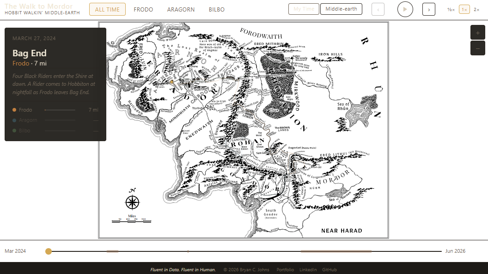
The slider moves through Shire-calendar-derived dates: T.A. 2941 (Bilbo) and T.A. 3018–3019 (Frodo and Aragorn). Character position is reconstructed from Tolkien's dated events and locations, calibrated to the fixed route mileage supplied by The Conqueror. The route's total fictional mileage stays fixed; what changes is when that mileage is accumulated across Tolkien's dates rather than mine.
This clock answers: Where does this movement fall within the story's own chronology? It lets you navigate through narrative beats — arriving at Rivendell, crossing the Bridge of Khazad-dûm, reaching Parth Galen — according to the story's Shire Calendar dates.
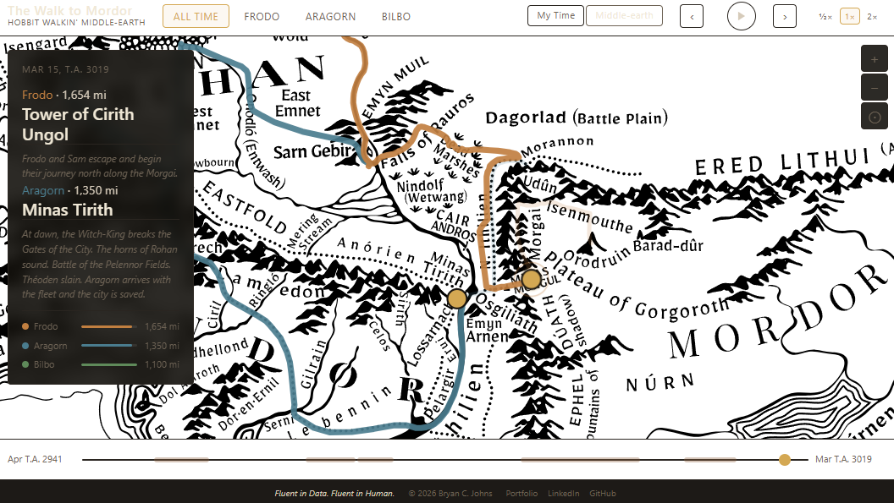
The story events work differently under each clock. In My Time, an event appears when my accumulated walking reaches its mileage point. In Middle-earth Time, events appear according to their place in Tolkien's chronology.
The two timelines don't simply display the same information on different dates. They produce different shapes of movement. My Time reflects the rhythm of my actual walking; Middle-earth Time reflects the rhythm of the story.
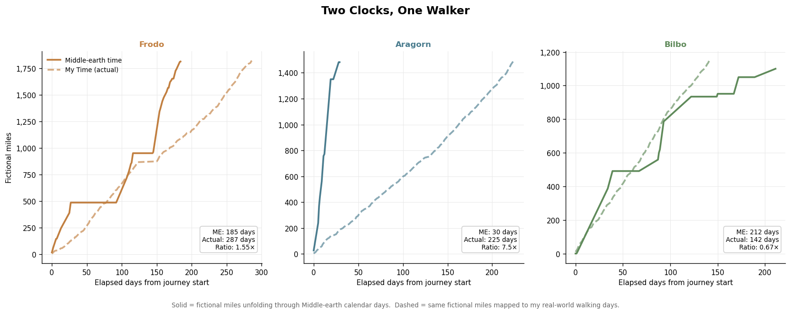
The same fictional distance reads as a very different temporal span depending on which clock you read. Aragorn's Return journey covers 1,482 fictional miles across just 30 Middle-earth days. My real-world walking of the same route spanned 225 calendar days, a ratio of 7.5×. In my defense, Aragorn rode a horse for most of the way. Frodo's ratio is a more modest 1.55× (and he used a boat). Bilbo inverts the pattern entirely: his fictional timeline runs 212 Middle-earth days while my real-world walking finished the same mileage in only 142 calendar days (ratio 0.67×).
Of Frodo's 185 Middle-earth days, fictional mileage is stationary for 95 of them — 51% of the journey. The two largest plateaus are Rivendell (65 ME days at mile 487) and Lothlórien (28 ME days at mile 952). During those same stretches, my real-world walking continued without pause; the two clocks were simply tracking different things. This is one of the sharpest demonstrations that the Middle-earth timeline and the walking calendar are genuinely independent systems.
Bilbo's fictional timeline has a more fragmented structure: three separate stationary periods (Rivendell rest, Wood-elves captivity, Lake-town rest) account for 72 of his 212 Middle-earth days (34%).
The reconstructed chronology produces different apparent travel rates depending on the mode of travel described in the story: walking, horseback, or boat. These are model-derived rates, not measurements from Tolkien's text. The result is a wide range: walking segments cluster around ordinary walking speeds, while horseback and boat travel can compress a large fictional distance into a few Middle-earth days. My actual walking rate does not change to reflect these modes, and anyone can clearly see the characters' fictional travel method increasing daily mileage in the Middle-earth clock.
In other words, the model lets Aragorn's horse do something my Fitbit obviously cannot: cover 77 fictional miles in a day.
Across the three challenges, median daily walking remained in a narrow range: Frodo 7.1 mi, Aragorn 6.5 mi, and Bilbo 7.9 mi. The journeys span more than two years and very different fictional circumstances, yet the real-world walking habit remained remarkably stable.
The raw data is a Google Fit export of daily step counts and distance measurements. The ETL process audits and cleans the export, assigns each day to a journey segment or gap, and produces public-safe aggregate data without publishing personally identifying health information.
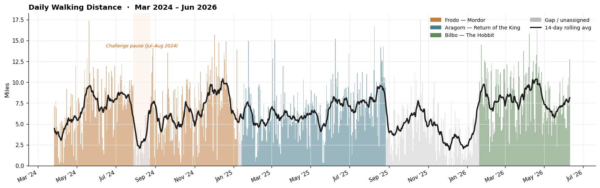
The rolling average tells the more honest story: there's no dramatic multi-week collapse at any point across two years. Variation exists, but it tends to be short-lived. The grey stretches, gaps when I wasn't logging miles for a challenge, confirm that the walking habit didn't depend on an active challenge. The last gap spans 147 days at roughly 4 miles/day, slower than challenge pace but continuous.
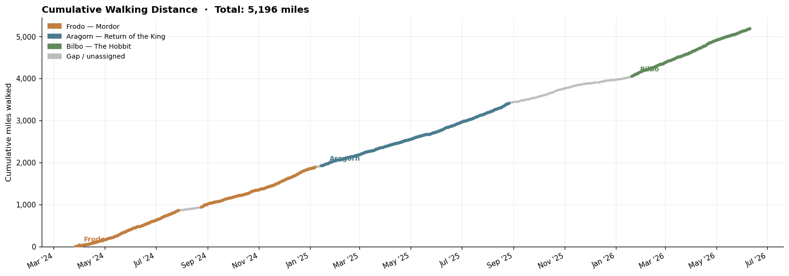
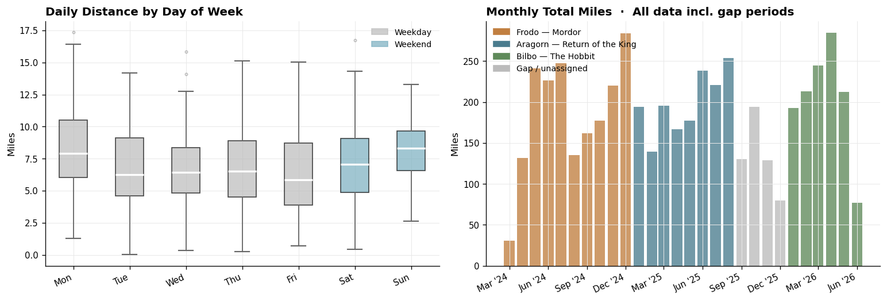
Gregorian dates weren't enough for this project. Tolkien's chronology uses the Shire Calendar, with twelve 30-day months plus several special days outside the months, including a leap day. I needed a way to turn those dates into something a computer could compare, sort, and interpolate.
So I numbered them.
I assigned every Shire Calendar day an absolute ordinal, anchored to 2 Yule, T.A. 2941. That gives Bilbo, Frodo, and Aragorn a common numerical time axis while preserving their separate narrative timelines.
The Conqueror provides a fixed total mileage for each journey and a set of named segment milestones. Tolkien's text and appendices provide dated narrative events. Neither source provides a day-by-day record of how far each character traveled on any given Shire date.
The movement model is built from a hand-curated anchor file combining Conqueror mileage with Tolkien's dated events, published chronology, and supporting reference material. Each anchor records a Shire Calendar date, cumulative mileage, place, and whether the date is explicitly established in Tolkien's chronology or estimated where the text leaves a gap. (Exact dates for The Hobbit in particular are sparse and therefore estimated.)
Between any two consecutive anchors, mileage is distributed linearly across the relevant Middle-earth days. Recognized rest stops (the Company's stay in Rivendell, the Fellowship's weeks in Lothlórien, and Bilbo's time in the Wood-elves' halls) produce zero-movement intervals: the ordinal advances but the cumulative miles don't change. This daily mileage distribution is what the visualization uses to reconstruct the characters' movements across Middle-earth.
This is a modeling choice, not a claim that Tolkien specified these daily distances. The anchor file records which dates are well-established and which are reasoned estimates. The model produces a plausible distribution of movement; it doesn't replicate the text with precision it doesn't have.
The underlying Middle-earth map is from
mapome
by k1tesurfen, an SVG map of Middle-earth licensed
CC BY-SA 4.0. It's loaded as a static <img> element rather
than inline SVG. A second SVG element, sized exactly the same, sits on
top as a transparent overlay. All route lines and markers are drawn
there. Because both elements share the same intrinsic aspect ratio,
overlay coordinates map directly to map coordinates at any zoom level.
Each journey's route has two distinct structures:
Geometry — a dense array of
{x, y} points hand-traced over the map, following roads,
river valleys, and mountain passes. This is what gets drawn as the
visible route line.
Anchors — a sparse set of calibration points, each linking a named location, a fictional cumulative mileage value, and an index into the dense geometry array. These are the connection between the fictional mileage model and the visual path.
The visualization converts a cumulative mileage value to an SVG position by finding the two calibration anchors that bracket it, calculating where the mileage falls between them, and walking the dense geometry to place the marker exactly on the traced path. The marker follows every bend in the route; it never cuts straight between calibration points.
The map is geographic, not a mileage scale. Fictional mileage does not equal visual path length. Calibration anchors tie specific mileage values to named locations, while the traced geometry supplies the shape of the route between them. The result is a geographic interpretation of the journey, not a claim that every mile or campsite is precisely located.
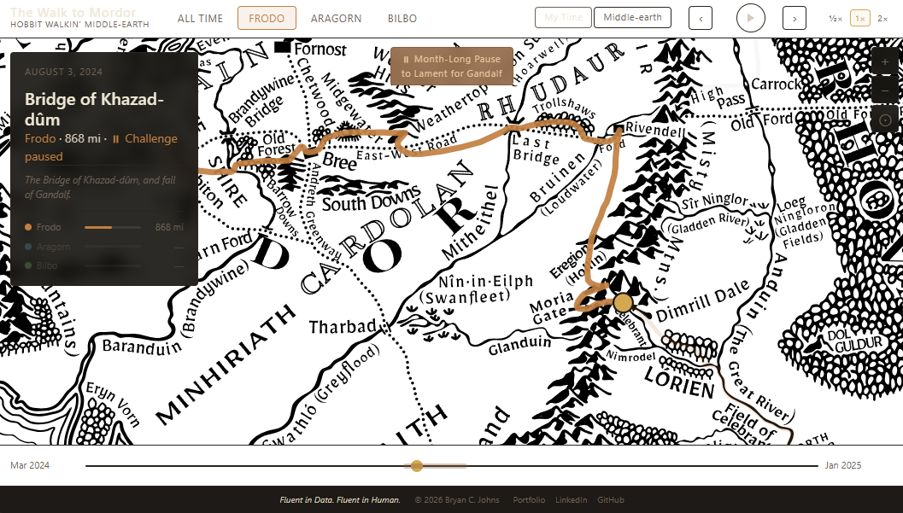
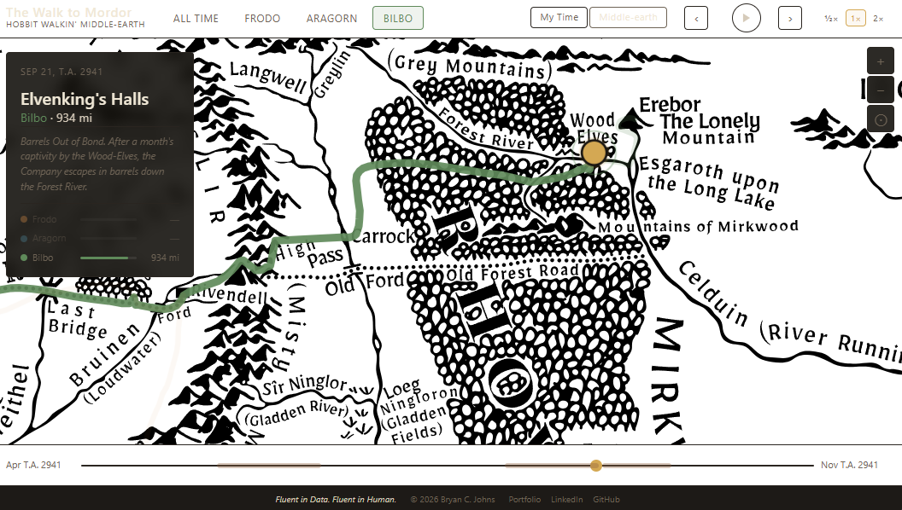
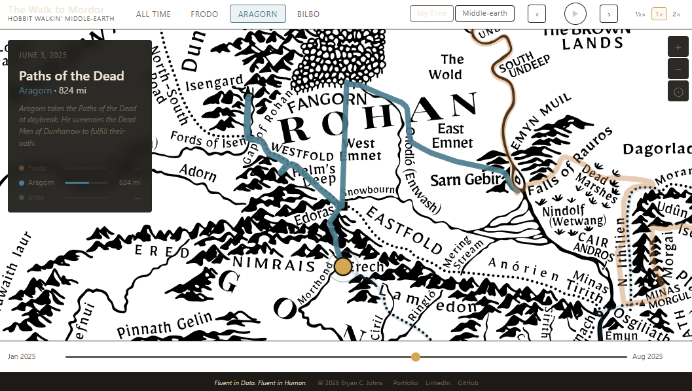
I had to draw the routes myself. No usable route geometry existed in a form I could directly incorporate into the visualization, so I built a small interactive route-building tool, inspired by geojson.io. The tool let me trace each journey over the base map, place mileage anchors, and export the geometry used by the final visualization.
The raw data is a Google Fit export of daily step counts and distances. A Jupyter notebook audits the export against the underlying daily records, selects a canonical source, assigns each day to a journey segment or gap, runs explicit data-quality checks at every boundary, and produces public-safe outputs for the visualization. No personal health data beyond daily aggregate distances is published; the original export stays gitignored.
A separate data file records dated story events independent of the movement model — date, cumulative mileage anchor, place name, and a brief description. The separation is intentional: narrative events aren't another way of calculating mileage; they're a layer of story that runs alongside it.
The two clocks use that same narrative data differently. In My Time, narrative events are looked up by mileage: the info panel shows the most recently reached story beat given your cumulative distance. In Middle-earth Time, they're looked up by ordinal date: the panel shows what Tolkien placed at that date, independent of pace. The same file serves both clocks correctly without modification.
The visualization is built in vanilla HTML, CSS, and JavaScript — no frameworks and no build step. The interface is designed for exploration rather than instruction: pan and zoom let the route be examined at different scales, playback turns the timeline into an animated journey, and the responsive layout keeps the map and narrative panel usable on smaller screens. A pause badge makes an important real-world interruption visible instead of hiding it.
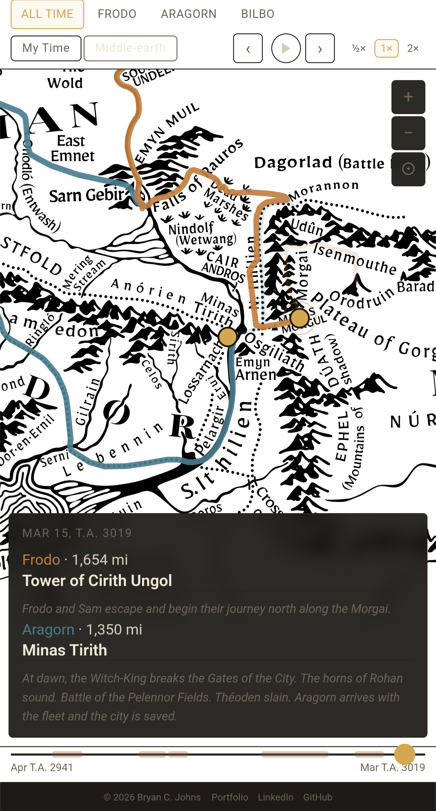
The project required several distinct kinds of problem-solving to hold together simultaneously. A custom calendar system had to be built from scratch; a movement model had to be reconstructed from sparse textual evidence rather than measured data; route geometry had to be hand-traced and calibrated to fictional mileage; and the frontend had to be built without a framework to avoid adding complexity where none was needed. Each piece had to be coherent on its own before the pieces could be brought together.
The most interesting constraint throughout was maintaining clarity about what was measured, what was modeled, and what was interpreted — and making that distinction visible in the interface rather than smoothing it over. The two-clock design forces that distinction into the open: neither timeline claims to be the authoritative record of the other.
The About page focuses on the story and the findings. These notebooks show the analysis underneath them, including the exploratory work, calculations, and comparisons used to build the visualization.
The Conqueror issues a digital completion certificate for each challenge segment finished. Across all three journeys there are eleven segments total — from The Shire to Mordor, Rohan to Gondor, and An Unexpected Journey to the Battle of the Five Armies.
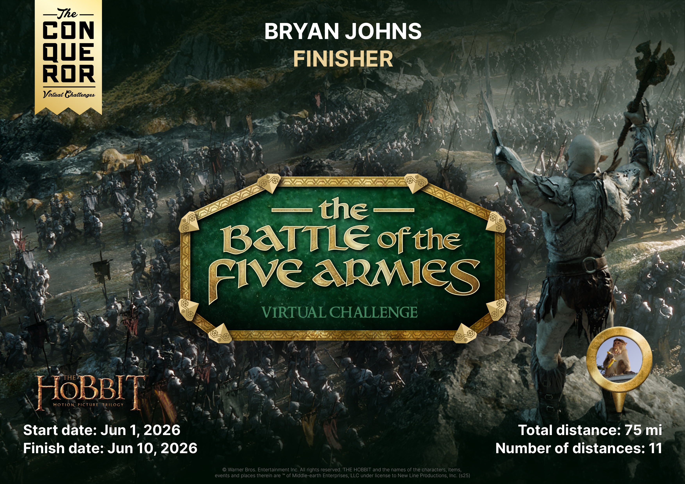
These are the certificates for the final segment of each journey. There are eight more for the segments that precede them.
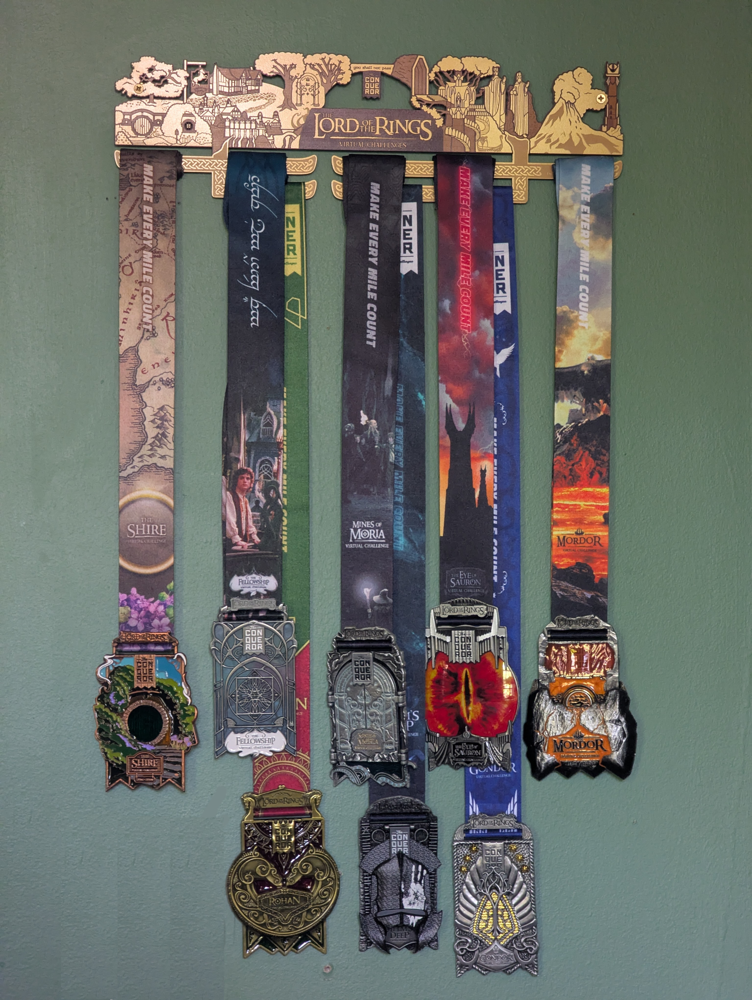
Original code © 2026 Bryan Johns, MIT License.
This project is non-commercial and is not affiliated with the Tolkien Estate, HarperCollins, or any rights holder. No claim is made to any intellectual property associated with Middle-earth. See the repository README for full attribution and licensing information.